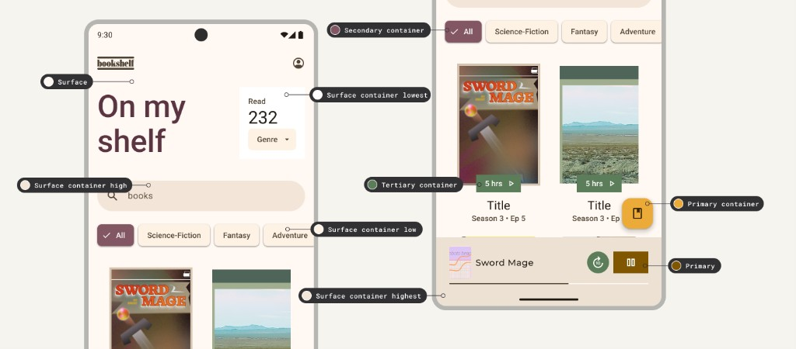

BOWL empezó tirando de lo que ya conocíamos: Material. Una semántica tipo
primary, secondary,
on-primary. Funcionaba mientras todo era más simple.
El problema era de base: hablaba de colores, no de interfaz.
2. El momento en el que dejó de encajar
Cuando BOWL crece y se convierte en herramienta real (backoffice, operativa, densa), cambia la prioridad:
el branding deja de mandar y empieza a mandar la estructura.
Ya no necesitas saber qué es “primary”, necesitas saber qué fondo es base, qué capa está encima,
qué texto vive ahí y qué separa sin molestar.
3. El problema de fondo
Material está pensado para interfaces donde el color tiene peso. Pero BOWL no va de eso:
va de leer rápido, entender jerarquía, no cansar y no liarla.
En resumen: necesitábamos ordenar, no decorar.
4. El clic
El cambio real fue dejar de pensar en colores y empezar a pensar en superficies.
Ahí Fluent encaja mejor: no dice “esto va sobre primary”, dice “esto vive sobre una superficie”.
Y en un backoffice eso es exactamente lo que necesitamos.
5. Qué cambió realmente
No fue un cambio de naming; fue un cambio de cabeza.
Pasamos de colores con rol a interfaz con estructura.
Ahora hablamos de superficies, contenido, capas y estados.
Y todo empieza a tener más sentido.
6. Qué ganamos
• Claridad: sabes por qué usas cada cosa.
• Orden: la UI se construye por niveles.
• Consistencia: menos dudas y menos parches.
• Mentalidad de producto: menos “branding”, más herramienta estructural.
Ejercicio guiado
Componente inventado: tarjeta “Confirma tus datos”
Dos bloques al estilo de las guías oficiales: primero la pantalla con roles Material 3; la segunda muestra cómo Fluent aplica la capa semántica (Neutral · Brand · Status) en los mismos componentes. Después, la tabla y los mocks cierran con la tarjeta “Confirma tus datos”.
Como en la guía de bookshelf: Surface y Surface container (lowest → highest) ordenan la profundidad; chips, barra y FAB usan Secondary, Primary container y Primary según el rol de la acción.
Referencia · guía M3 (pantalla bookshelf)

Ejemplo 2
Misma pantalla · capas Neutral, Brand y Status (Fluent / BOWL)
Fluent no usa “surfaceContainer High/Low”: separa por intención y uso. El lienzo y las piezas neutras se leen con colorNeutralBackground1…3; el énfasis y el FAB comparten Brand; el badge verde entra por Status, no por “terciario” del tema.
Contraste con M3: no hay “primary / secondary / tertiary container” como familia de tema; el verde del badge es Status; chip activo y FAB usan Brand + OnBrand. La franja inferior y el control circular pueden compartir colorNeutralBackground2 (capa neutra), sin mezclar con tokens de marca.
Tabla y mocks
Ejemplos 1 y 2: misma pantalla con roles M3 y con capas Neutral · Brand · Status en BOWL.
Tabla: misma idea en formato lista (tarjeta “Confirma tus datos”).
Mocks abajo: la tarjeta aplicada, sin anotaciones.
Parte del UI
Rol (idea)
Material 3 (rol de color)
Fluent · BOWL (token)
Qué estás decidiendo
Fondo de la pantalla
Surface base
surface
colorNeutralBackground1
Estructura neutra; el lienzo no “grita” marca.
Panel de la tarjeta
Superficie elevada / contenedor
surfaceElevated (demo)
colorNeutralBackground3
Separar el bloque del resto sin usar Brand; un nivel más de jerarquía neutra.
Título
Contenido principal
onSurface
colorNeutralForeground1
Texto con máxima jerarquía sobre superficie neutra.
Material: “Cada pieza tiene un rol de tema (surface, primary…); el ‘on-*’ va siempre emparejado al color que toca.”
Fluent / BOWL: “Primero Neutral para estructura y lectura; Brand solo en botón y vínculos de marca; el texto del botón sobre marca usa OnBrand, no el mismo foreground que el título.”
Tip didáctico: si en el mock Fluent el título usara colorBrandBackground solo para “destacar”, estarías mezclando estructura con marca. La tarjeta se queda en Neutral; la marca solo entra en el CTA y el enlace de acción.
Aplicación práctica
Tokens aplicados a componentes
Esta sección usa solo familias válidas de BOWL: Neutral, Brand y Status.
Cada ejemplo muestra zona visual + token aplicado para evitar mapeos ambiguos o legacy.
Status.Info.Background.Rest + Status.Info.Foreground.On Info
En feedback semántico, evita usar Brand/Neutral por parecido visual: el rol correcto es Status.
Si hay borde de severidad, usa la rama Status.<Tipo>.Stroke.Rest.
Componente
Parte visual
Material (rol)
BOWL válido
Estado
Button CTA
Fondo
primary
Brand.Background.1
Rest/Hover/Disabled
Button CTA
Texto
onPrimary
Neutral.Foreground.On Brand
Rest/Disabled
Link
Texto de enlace
primary (text)
Neutral.Foreground.Link
Rest/Hover
Card
Superficies
surface/container
Neutral.Background.1/2/3
Rest
Input
Borde focus
outline focus
Neutral.Stroke.Brand
Rest/Focus
Alert
Fondo + texto
error/warning/success/info
Status.<Tipo>.Background + Foreground
Rest
Guía didáctica
Guía semántica
Separamos los colores por intención, no por componente ni por “tipo de azul”.
La base del sistema se apoya en tres grupos: Neutral, Brand y Status.
Un token completo combina intención + uso + estado + contexto.
Neutral
Cubre la mayor parte de la UI: texto, iconos, fondos base y bordes.
Ejemplo visual: card base + título + borde.
Título neutral
Descripción neutral
Brand
Expresa identidad o acción principal. No se usa para texto corriente.
Ejemplo visual: botón primario.
Status
Se reserva para error, éxito, warning e info. Nunca decorativo.
Ejemplo visual: feedback de error real.
Error de validación
Uso: Background · Foreground · Stroke
Background: relleno/superficie.
Foreground: contenido (texto/iconos).
Stroke: bordes/contornos/divisores.
Background
Foreground
Stroke
Estado: Rest · Hover · Pressed · Disabled
Cada intención/uso cambia por estado sin perder significado.
Rest
Hover
Pressed/Select
Disabled
Contexto: On Brand · Inverted · Subtle
On Brand: foreground sobre superficie brand.
Inverted: versión para fondos oscuros/invertidos.
Subtle: versión suave de baja intensidad visual.
On Brand (texto sobre brand)
Inverted
Subtle
Reglas de consistencia
• No usar Status para decorar.
• No usar Brand para texto de lectura normal.
• Si el token dice OnBrand, debe vivir sobre superficie brand.
• Mapear por intención, no por nombre de componente.
Referencia
Mapa visual: roles (Material) vs alias (Fluent)
Esta sección imita el tipo de contenido que muestran las guías: en Material, el reparto por
roles de color (superficie, contenedores, acentos, error…); en Fluent, el mismo significado organizado por
familias de alias (Neutral, Brand, Status) como en la documentación de tokens.
La página de roles de color agrupa
cómo se combinan superficies, contenedores y acentos. Abajo, un mock compacto con etiquetas de rol (no es un tema oficial).
primary
onPrimary
onSurface
onSurfaceVariant
primaryContainer
onPrimaryContainer
errorContainer
onErrorContainer
error · onError
surfaceVariant
secondary
tertiary
Colores: theme.extend.colors.m3.* · tonos inspirados en la paleta M3.
Fluent 2Idea de la guía de alias
En Color tokens, los alias se
agrupan en Neutral, Brand, Status, etc. (y subniveles como Background1/2/3). Aquí va
un mock compacto con los mismos nombres de alias que en la documentación.
Neutral · colorNeutralBackground1
colorNeutralBackground2
colorNeutralForeground1
colorNeutralForeground2
Brand · colorBrandBackground
colorNeutralForegroundOnBrand
Status · fondos (como en la tabla Fluent)
colorStatusSuccessBackground1
BOWL: colorStatusSuccess
colorStatusWarningBackground1
BOWL: colorStatusWarning
colorStatusDangerBackground1
BOWL: colorStatusError
Los foregrounds de status (p. ej. colorStatusDangerForeground1) siguen la misma tabla en la guía Fluent; enlazarlos en vuestro JSON.
Colores: theme.extend.colors.bowl.* · nombres de alias según Fluent 2.
Fundamentos · Superficies
Superficies neutras: capas de estructura
Material usa surface, surfaceVariant, etc. Fluent/BOWL usa niveles colorNeutralBackground1…3 (y más si el JSON lo define).
Material 3
surface → bg-m3-surface
surfaceVariant → bg-m3-surface-variant
elevación / tarjeta
Demo Material: colores en theme.extend.colors.m3.*.
Misma idea: niveles neutros; las clases Tailwind reflejan el alias del tema (valores sustituibles por vuestro JSON).
Material
Fluent · BOWL
Dónde aplica
surface
colorNeutralBackground1
Lienzo base
surfaceVariant
colorNeutralBackground2
Franjas, sidebar, cabeceras de tabla
card / elevación
colorNeutralBackground3
Paneles y tarjetas
Referencia · BOWL
Tokens de color · Light
Listado generado desde Light.tokens.json: se incluyen solo las colecciones semánticas
Neutral, Brand y Status.
Quedan fuera las ramas marcadas con ❌ en el archivo (p. ej. botones legacy, Surface duplicado, States, etc.).